Biaolong Xie
Technical implementation, prototype design, bug testing, portfolio and media support.
Our project is a playful web-based climbing community experience that helps climbers discover routes, record progress, and stay socially motivated.
Each member contributed to a different layer of the project, from research and UX analysis to web implementation, visual identity, shared bug testing, and evaluation documentation.
Technical implementation, prototype design, bug testing, portfolio and media support.

Research, user testing results collection, bug testing, portfolio design, presentation support.

Meeting documentation, presentation lead, video narration, bug testing.

User research, documentation, bug testing, portfolio support.
This module combines the project motivation, research gap, and stakeholder/persona definition into one evidence-led foundation for Rockbond.
We chose the Active Lifestyles / Go Climbers track because climbing is not only a form of exercise, but also a social and motivational experience. For many student climbers, especially beginners, climbing sits between fitness, leisure, self-improvement, and belonging. Each session gives people visible challenges to attempt, routes to remember, and small achievements to recognise. This makes climbing a strong human-centred design context because progress is personal, emotional, and often shared with others.
At the same time, beginner-to-intermediate climbers often experience gaps between sessions. They may forget routes, lose track of progress, struggle to find partners, or feel unsure whether they are improving. Existing tools can support parts of this experience, but they often separate logging, discovery, community, and motivation. Rockbond responds to this opportunity by proposing a mobile-first climbing companion that helps users record sessions, revisit saved projects, notice progress, discover events, and stay connected through lightweight, supportive community features.
Because the track asks us to design for active lifestyles, it lets us address barriers that affect real participation: confidence, routine, access to companions, and the feeling that effort is meaningful. This focus gives the project a practical health angle while leaving space for playful interaction and community value.
Climbing combines physical activity, visible skill progression, social participation, and personal motivation. The current experience is often split across memory, generic apps, and in-person coordination.
The main users are student climbers, beginners, and socially motivated climbers. They struggle to see progress, remember routes, find partners or events, and stay motivated between sessions.
Rockbond helps users log sessions, remember saved projects, view progress, discover gyms or events, and connect through lightweight community features.
The design responds to different needs: beginners need confidence and accessible entry points, while regular climbers need continuity, momentum, and climbing-specific tracking.
Progress quests, climb circles, and discovery badges make climbing more engaging while keeping the experience supportive, low-pressure, and suitable for everyday users.
The gap review compares six academic papers and four commercial products through three strengths and three missed opportunities, showing what existing research and tools support well and where Rockbond can still add value.
The literature shows that climbing participation is linked to motivation, leisure satisfaction, and physical self-efficacy. Digital support should therefore help users feel that participation is worthwhile, not just record isolated sessions.
Fitness-app research also suggests that social features and gamification can increase engagement, but comparison-based systems need careful framing so they remain supportive rather than discouraging.
Climbing-specific apps such as KAYA and Vertical-Life are useful for logging, discovery, and climbing content. ClimbTime supports local gym coordination, while Strava is strong in challenges and social visibility.
However, these products rarely combine lightweight student-friendly progress tracking, climbing-native social connection, and playful motivation in one coherent mobile-first experience.
The academic and commercial review point to the same unmet need: climbers benefit from motivation, self-efficacy, social support, and meaningful progress visibility, but current tools often separate these needs.
Rockbond addresses this gap by focusing on gradual progression, social belonging, and playful motivation for everyday beginner-to-intermediate climbers rather than elite performance alone.
Rockbond is shaped around primary users who directly participate in climbing and secondary users who support learning, gym access, events, and community culture.
The stakeholder groups are divided into primary users who directly participate in climbing and secondary users who shape or support the climbing experience through learning, gym access, events, and community culture.
The primary users are student climbers, beginner climbers, and socially motivated climbers who need support with participation, improvement, and staying engaged with the climbing community.
These users benefit from a mobile-first system because they need low-friction access to information, lightweight progress tracking, and easy coordination with other climbers.
Secondary users include regular indoor climbers, experienced peers, coaches, climbing gym staff, and event organisers who shape route access, learning opportunities, newcomer onboarding, and community culture.
They may not be the first-time beginner audience, but they can contribute content, organise activities, invite others, and help sustain the platform's social value.
"I want to feel that I'm getting better, even when I'm still not climbing very hard routes."

Linh started indoor bouldering recently after seeing friends post about it online. She enjoys climbing, but still feels uncertain about technique, gym etiquette, and how to judge whether she is improving.
"I want one place where I can track my climbing, stay psyched, and connect with people to climb with."

Ethan enjoys pushing to harder grades, but he is equally motivated by climbing with others, sharing beta, and discovering new sessions or events. He already uses general fitness and social apps, but none of them fully fit climbing.
This module keeps the required evidence visible: the current-state user journey map, the three must-have playful requirements, and five evidence-of-life interview photo slots.

Scenario: A climber wants to keep improving, stay motivated, discover climbing opportunities, and feel connected to a climbing community.
B. Explanatory ParagraphThis journey map shows that the central problem is not limited to the climbing session itself. Instead, the experience breaks down across the transitions before, during, and between sessions. Users may enjoy climbing, yet still struggle to sustain participation because progress is hard to see, social opportunities are hard to discover, and motivation fades once the session ends. The most important themes revealed here are therefore motivation, progress visibility, and social connectedness. A successful system should not simply digitise logging; it should connect these moments into a more continuous experience.
C. Journey-to-Design LinkThe journey map directly informs the next-stage requirements. Pain points around fragmented planning suggest the need for partner-finding and event discovery. Pain points during and after climbing suggest the need for low-friction logging and clear progress summaries. Pain points between sessions suggest the need for playful motivational loops, such as milestones, streaks, or friendly challenges. Together, these opportunities create a strong bridge from journey analysis to concrete user, functional, and playful requirements.
The system is considered playful only if it supports progress, social motivation, and discovery without turning the experience into pressure-based competition.
The findings suggest that an effective climbing community app should prioritise clarity, continuity, and social accessibility over feature quantity.
Must: quick logging, progress dashboard, saved projects, partner-finding, event discovery, progress quests, climb circles, discovery badges, beginner-friendly UX.
Should: achievement sharing, beta sharing, optional reminders, personalised suggestions, beginner onboarding pathways.
Could: seasonal campaigns, coach tools, gym exploration maps, deeper analytics, wearable or sensor integration later.
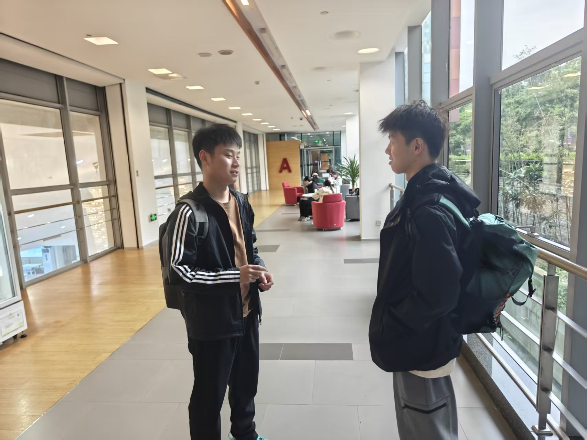
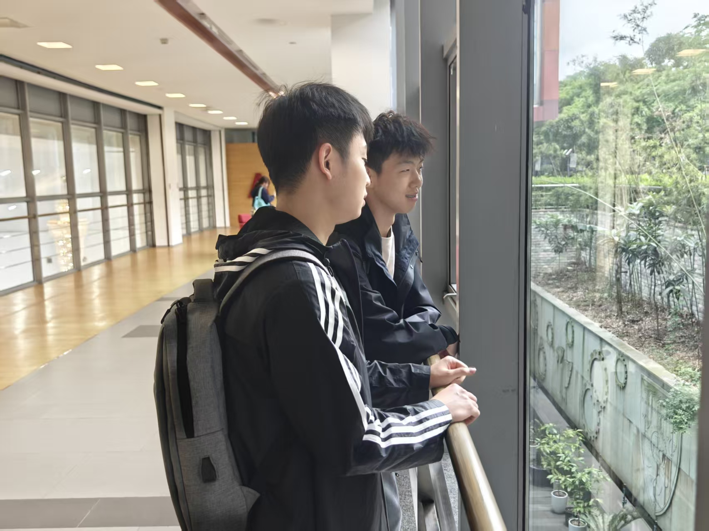
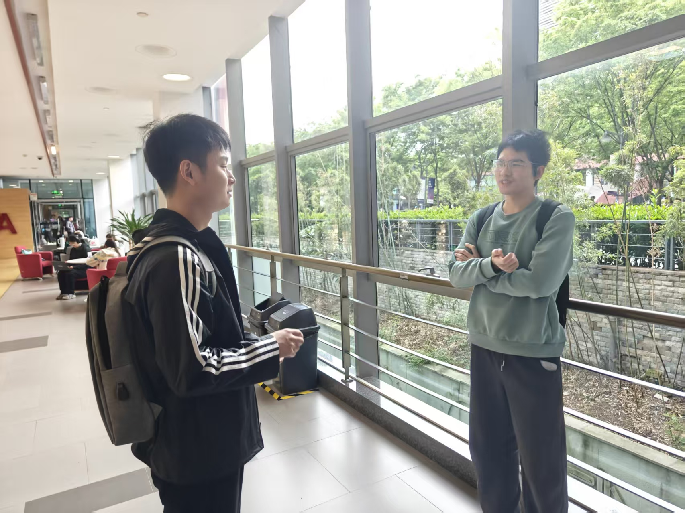
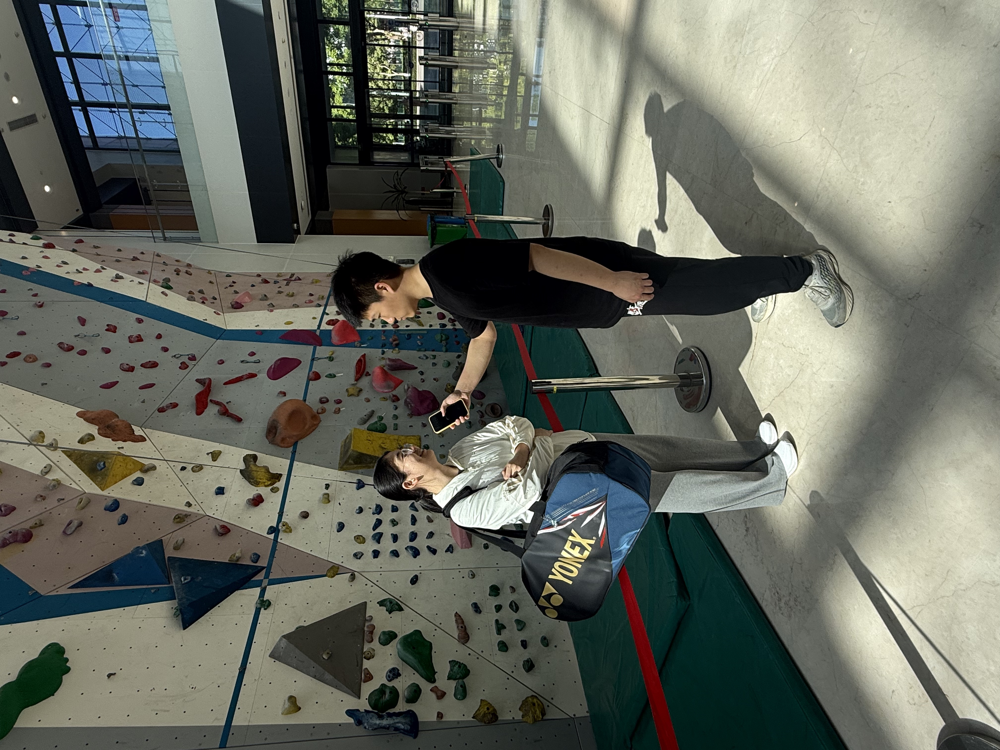
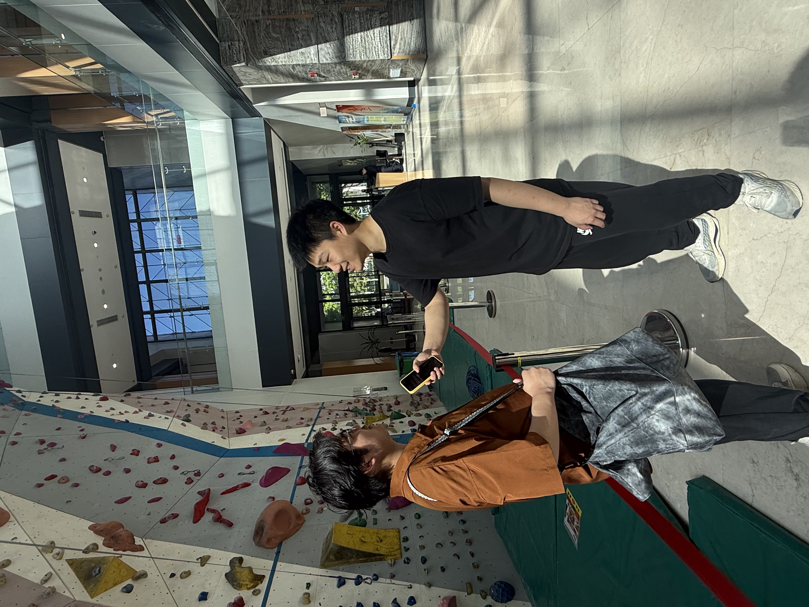
This module brings together the Crazy Eights sketches, the comparison of three design alternatives, and the low-fidelity Figma prototype link.
The Crazy Eights exercise translated the strongest ideation themes into fast screen concepts, helping us compare onboarding, progress, social coordination, discovery, logging, challenges, sharing, and achievement journeys.


Each sketch focused on a specific user moment and tested whether the idea could become a clear, mobile-first screen.
This sketch explores how onboarding could personalise the app for beginners, regular climbers, and socially motivated users from the first screen.
This sketch treats the home page as a simple progress centre that keeps users motivated between climbing sessions.
This sketch shows a low-pressure matching flow for users who want climbing partners without joining a large public feed.
This sketch explores how discovery features could connect community participation with playful exploration rewards.
This sketch focuses on fast post-climb logging so users can remember what they did without heavy manual input.
This sketch tests a friend-based challenge model that creates social motivation without relying on leaderboards.
This sketch explores a lighter community feed centred on useful updates and encouragement rather than performance broadcasting.
This sketch frames the profile as a personal climbing journey that combines progress, memory, and exploration rewards.
From the Crazy Eights sketches, we found that the most useful ideas were the ones that made progress easy to see, supported small-group social interaction, and encouraged users to discover new climbing opportunities. These directions matched our earlier research findings, especially the need for clearer session-to-session continuity, easier partner-finding, and playful but low-pressure motivation.
The sketching exercise also helped us narrow the scope for the next stage. Some ideas, such as quick logging, circles, challenges, and event discovery, were easier to turn into screens and user flows. Other ideas, such as a large public feed or more detailed analytics, felt less suitable for an initial prototype. Based on this, our low-fidelity prototype should focus on a hybrid direction that combines progress, community, and discovery in a simpler mobile-first flow.
The alternatives were developed from the ideation themes and Crazy Eights sketches, then compared against user needs, playful requirements, and mobile-first feasibility.
The ideation process used brainstorming, theme grouping, and selection criteria to move from broad opportunities into a focused set of concepts that match user pain points and mobile-first feasibility.
The brainstorming stage explored multiple routes from the same evidence base: progress visibility, session memory, social coordination, beginner confidence, and supportive playful motivation.


Each theme was checked against a concrete pain point and a playful requirement so that ideation stayed connected to the research rather than becoming feature decoration.
A lightweight quest system turns personal climbing goals into small, achievable session-based tasks that help users notice improvement over time.
Users join or create small circles with friends or partners to coordinate sessions, share updates, and complete friendly micro-challenges together.
The system rewards users for discovering beginner sessions, new gyms, events, or new climbing partners through map-style markers and community badges.
Users can quickly save routes, projects, photos, and short notes so that each climbing session connects to the next one without heavy manual tracking.
The system presents low-pressure prompts, beginner tags, supportive summaries, and small-wins feedback to reduce intimidation and help new climbers feel included.
After a session, users can post a lightweight check-in, share one achievement, or ask for route advice without needing a full social-media style feed.
The six initial plans were assessed against criteria that balance user relevance, inclusive playful experience, social value, mobile-first feasibility, and prototype clarity.
Concept: The system is primarily organised around helping users find climbing partners, join sessions, and stay socially connected, with progress tracking as a supporting feature.
Core interaction model: Users enter the app to discover who to climb with, what sessions are available, and what events are happening nearby. Social coordination is the main entry point.
Playfulness support: Supports Climb Circles and exploration badges well, but may underplay personal progress quests.
Technical feasibility: Moderate. Filtering, matching, and event views are feasible in a low-fi prototype, but deeper social coordination logic may become more complex later.
Suitable user type: Best for beginners, socially motivated climbers, and users who mainly need community entry points.
Concept: The system is primarily structured around logging climbs, remembering projects, and visualising improvement over time, with social features layered around that core.
Core interaction model: Users come into the app mainly to log sessions, review progress, and receive supportive goal prompts or quests.
Playfulness support: Supports Session-to-Session Progress Quest strongly, but needs careful integration of circles and discovery to avoid feeling too private.
Technical feasibility: High. Logging, dashboard views, saved projects, and milestones are relatively clear to prototype as a web app.
Suitable user type: Best for regular climbers and users who already climb consistently but want better continuity and motivation.
Concept: The system combines a personal progress core with small-group social motivation and lightweight discovery features, balancing individual continuity with community participation.
Core interaction model: Users can quickly log sessions and see progress, but the app also surfaces circles, beginner sessions, events, partner-finding, and exploration rewards in connected ways.
Playfulness support: Strongest overall fit for progress quests, micro-challenges, and discovery badges together.
Technical feasibility: Moderate to high if scoped carefully. A focused MVP can implement the core flow without building every social feature in full detail.
Suitable user type: Best for a mixed target group including beginners, student climbers, and regular users who want both progress and social motivation.
The comparison shows why the hybrid model was kept, while the strongest parts of the other alternatives were combined into it.
| Alternative | Main concept | Best for | Strengths | Weaknesses | Playfulness | Feasibility | Keep / Drop / Combine |
|---|---|---|---|---|---|---|---|
| Social Matching First | Community entry through partner-finding and event discovery | Beginners, socially motivated climbers | Strong social value, welcoming entry, partner-focused | Progress becomes secondary | Medium-High | Moderate | Combine |
| Progress Tracking First | Personal logging, memory, and progress visibility | Regular climbers, self-improvement users | Clear need fit, easy to prototype, strong functional core | Can feel socially thin | Medium | High | Combine |
| Hybrid Progress + Community Motivation | Progress core with social circles and discovery | Mixed user group | Best overall alignment with findings and playful features | Needs tighter scoping | High | Moderate-High | Keep |
Based on the second-stage findings, the most suitable direction for the project is a hybrid model that combines progress tracking with low-pressure community motivation. The research does not support a purely social app or a purely individual tracking app. Instead, the findings repeatedly show that users want to keep improving, stay motivated between sessions, and feel socially connected without being pushed into overly competitive interaction. A hybrid direction therefore provides the best fit with the project's main pain points and must-have playful requirements.
In practice, this means the low-fidelity prototype should be built around a clear personal progress core, supported by small-group challenges, partner-finding, and community discovery. This direction is also realistic for implementation because the first prototype does not need to build every feature at full depth; it only needs to demonstrate a coherent user flow in which logging, progress feedback, and social motivation reinforce one another. For a student web-app project, this hybrid model offers the strongest balance between human-centred justification, playful interaction, and feasible development scope.

The low-fidelity prototype shows the selected hybrid concept as a clickable mobile flow with the core structure, layout priorities, and main task sequence.
This module explains how the Rockbond web app handles data, links to the final prototype/system, and records the concrete contribution of each team member.
The architecture diagram shows the main user interface, application logic, data flow, and storage/service relationships used by the Rockbond web app.
RockBond was built as a single-page web application using React and Vite. The app is organized into reusable components, page-level views, mock data files, and utility functions. React Router manages navigation between pages such as Home, Explore, Community, Profile, Notifications, Session Details, and Onboarding.
The frontend handles interactions directly in the browser. Users can complete onboarding, log climbing sessions, join or leave public sessions, send friend requests, receive notifications, unlock badges, and track rank progress. Because this is a prototype, user-generated data is stored locally with localStorage rather than a real backend server.
The project is deployed on Vercel as a web app. A vercel.json rewrite rule allows direct visits to routes such as /profile or /community to load the React app correctly.
User input and interaction state are handled through React state and localStorage. Onboarding creates the user profile; climbing logs are used to calculate total climbs, total hours, rank progress, milestones, and badge unlocks; joined sessions, friend requests, friends, chats, notifications, and circle activity are stored as separate local records.
Mock data provides seed content for recommended partners, public sessions, circles, and default notifications. When a user performs an action, the app updates localStorage and re-renders the relevant UI from the new state.
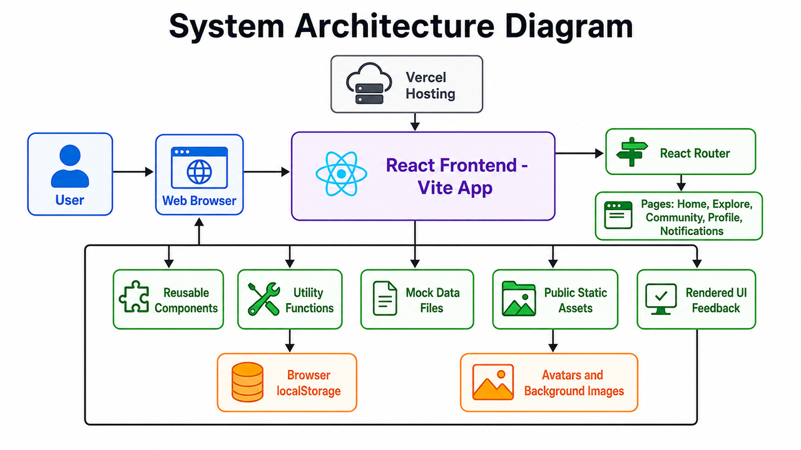
Users interact with RockBond through a browser-based interface. The React frontend handles routing, page rendering, user actions, and UI updates, while React Router controls navigation between onboarding, home, profile, community, explore, and session detail pages.
Prototype data is stored in browser localStorage, including user profiles, climbing logs, joined sessions, badges, notifications, friends, and chats. Mock data files provide seed content such as public sessions, recommended partners, circles, and default notification examples, while static images are loaded from the public folder. Vercel hosts and serves the built React app.
This frontend-only architecture was appropriate because RockBond is a web app prototype focused on demonstrating user experience, interaction flow, and product functionality. localStorage allowed the team to simulate persistence quickly, mock data made the app feel realistic, and Vercel provided simple deployment as a real accessible web application.
The final prototype is available as both a clickable Figma flow and a deployed web app system.
Open the polished clickable prototype showing the refined visual design, mobile flow, and interaction structure.
Hosted SystemOpen the deployed Rockbond system prototype hosted on Vercel.
The table records each member's role, specific tasks, and concrete outputs for the final project.
| Member | Role | Specific Tasks | Deliverables / Outputs |
|---|---|---|---|
| Biaolong Xie | Technical implementation, prototype design, shared bug testing, portfolio and media support | Led the system vibe coding process; implemented and refined the RockBond web app; designed the Figma prototype; participated in bug testing; contributed to portfolio content; supported poster design; planned and arranged video content structure. | Working React/Vite web app prototype; Figma prototype screens; bug testing notes; portfolio sections; poster design contributions; video content plan. |
| Weichun Zhou | Research, user testing results collection, shared bug testing, portfolio design, presentation support | Collected user requirements through questionnaires and interviews; collected and organized user testing results; participated in bug testing; contributed to portfolio content and page design; supported poster design; prepared and delivered part of the presentation explanation. | User requirement findings; questionnaire/interview materials; collected user testing results; bug testing notes; portfolio page design and written content; poster design contributions; presentation speaking notes. |
| Kunyang Zhang | Meeting documentation, presentation lead, video narration, shared bug testing | Organized and recorded meeting discussions; participated in bug testing; contributed to poster design; served as the main presenter for the presentation; served as the main speaker for the video. | Meeting notes; bug testing notes; presentation delivery; video narration; poster design contributions. |
| Ning Ma | User research, documentation, shared bug testing, portfolio support | Conducted questionnaires and interviews; participated in bug testing; contributed to poster design; filled in portfolio content; organized and polished project documentation. | User research data; interview/questionnaire summary; bug testing notes; portfolio written sections; organized final documentation; poster design contributions. |
This module currently focuses on the first evaluation requirement: testing the RockBond alpha version with three real people and summarising the main results.
Each participant completed core tasks related to onboarding, logging progress, joining sessions, checking notifications, and finding partners.
We tested the alpha version of RockBond with three real users. Each participant was asked to complete core tasks related to onboarding, logging progress, joining sessions, checking notifications, and finding partners.
Target user match: Interested in finding climbing partners.
Overall result: Completed main tasks, but felt some UI areas used too much space.
Target user match: Interested in session discovery and progress tracking.
Overall result: Completed tasks, but wanted clearer feedback after rank upgrades.
Target user match: Interested in community and partner discovery.
Overall result: Completed tasks, but found the partner page organization unclear.
| Task | Result | Observed Issues |
|---|---|---|
| Complete onboarding | Successful | Users understood the basic preference selection flow. |
| Check Home page | Mostly successful | Bottom navigation and large cards reduced visible content. |
| Add a climbing log | Successful | Users understood progress logging after labels were clarified. |
| Join or view sessions | Successful | Users expected session-related cards to open session detail pages. |
| Find partners | Partially successful | Users wanted existing friends and recommended partners separated. |
| View Profile | Successful | Users expected profile data to reflect onboarding choices. |
| Receive feedback from progress | Partially successful | Rank upgrades needed stronger celebration or notification feedback. |
The alpha testing results directly shaped four interface refinements. Each change responded to a specific usability problem observed during testing.
Problem identified: Users felt the bottom navigation bar took up too much screen space.
Evidence: In the iteration record, users directly commented that the bottom navigation was too large and reduced available content space.
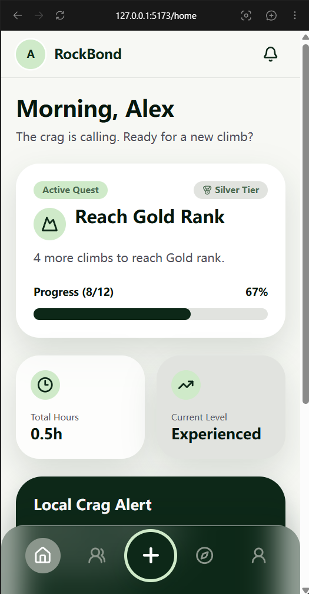
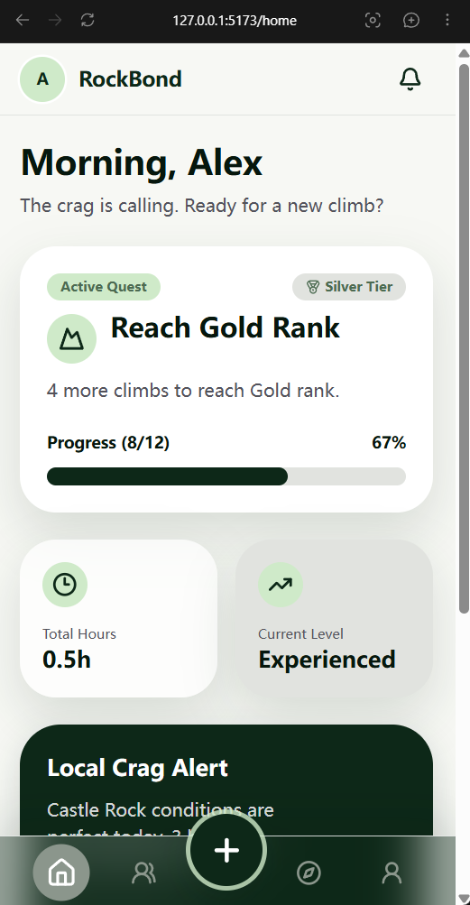
Improvement made: The bottom navigation was visually tightened so that it used less vertical space while still keeping the main navigation items accessible.
Why this was better: This improved mobile usability by allowing more page content to remain visible, reducing unnecessary scrolling and making the interface feel lighter.
Problem identified: Users felt that several card components had too much blank space and did not show enough useful information.
Evidence: The iteration record shows user feedback that cards were too spacious and occupied too much screen area.
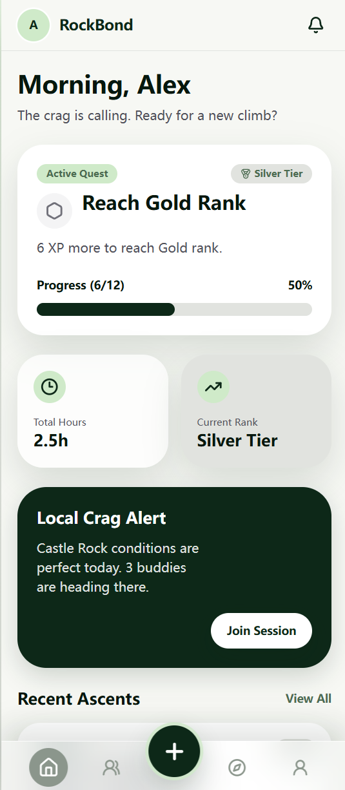
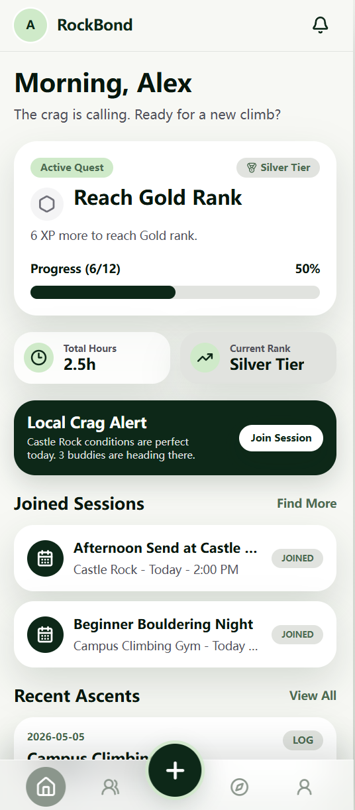
Improvement made: Card spacing was reduced and the layout was adjusted to improve information density. Important content became easier to scan within the same screen area.
Why this was better: The revised layout made the app feel more efficient and better suited for repeated use, especially on mobile screens where space is limited.
Problem identified: Users did not feel enough achievement or motivation when they upgraded rank or unlocked badges.
Evidence: The iteration record notes that users felt rank upgrades lacked celebration feedback, reducing the sense of accomplishment.
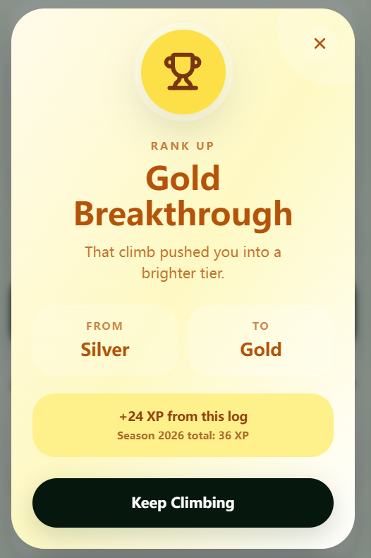
Improvement made: Rank upgrades and badge unlocks were connected to visible feedback, including notification messages and red-dot notification indicators. Users can now see achievement-related updates in the Notifications page.
Why this was better: This made the progress system feel more rewarding and helped reinforce the motivational purpose of RockBond.
Problem identified: Users found it unclear when existing friends and recommended partners were shown in the same list.
Evidence: The iteration record states that users wanted the friends page to distinguish between current friends and recommended community partners.
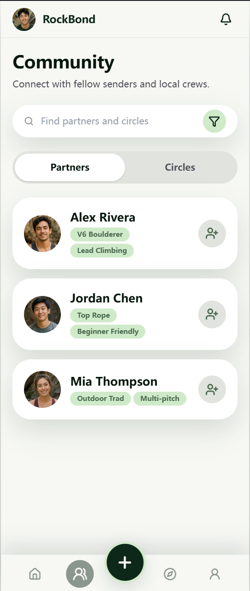
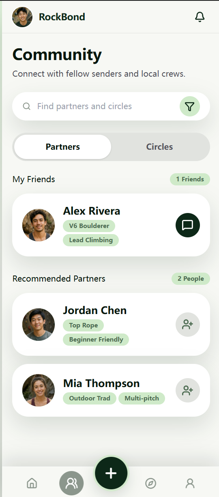
Improvement made: The Community Partners page was divided into two sections: My Friends and Recommended Partners. Existing friends now show a message action, while recommended partners show add or pending request states.
Why this was better: This made the social relationship status clearer and helped users understand what action they could take with each person.
The usability testing helped us move RockBond from a visually complete prototype toward a more usable and understandable web app. The main improvements focused on reducing layout friction, improving information clarity, and strengthening motivational feedback.
User feedback directly influenced changes to navigation, card layout, achievement notifications, and partner discovery. These refinements made the app more practical for the target users and better aligned with the original goal of helping climbers track progress, find partners, and stay motivated.
This reflection summarises the final project outcome, the social and ethical implications of the design, and how generative AI was used responsibly during development.
Overall, RockBond developed from a research-led idea into a mobile-first web prototype for everyday climbers. The final system focused on three connected values identified throughout our process: making climbing progress more visible, supporting low-pressure social motivation, and helping users discover climbing opportunities more easily.
The project outcome was not intended to be a full commercial climbing platform. Instead, it functioned as a functional human-centred prototype that demonstrated the core interaction logic of a playful climbing community system for beginner-to-intermediate climbers.
RockBond has the potential to make climbing participation more accessible and socially supportive. Beginner-friendly events, partner-finding, and climb circles may reduce the awkwardness of entering a new sports community, while progress quests and small-group challenges may help regular climbers stay motivated between sessions.
However, playful features could become harmful if implemented as high-pressure competition. Public comparison, rankings, or constant progress reminders could make beginners or less active climbers feel excluded. Therefore, RockBond should maintain a low-pressure social model where challenges are optional, feedback is encouraging, and users control how much they share.
Research participation should remain informed, voluntary, and withdrawable. For the system itself, climbing logs, goals, routes, partner activity, and community participation can reveal personal routines, physical activity patterns, location preferences, and social relationships.
A future version should minimise unnecessary data collection, avoid exposing personal activity publicly by default, and give users control over what they share. It should also reward participation, confidence-building, exploration, and small improvements rather than only advanced grades or competitive rankings.
AI tools supported code planning, implementation, debugging, deployment guidance, and writing, while the project direction, user research, feature priorities, and final design decisions remained team-led.
We used ChatGPT / Codex for code planning, implementation support, debugging, deployment guidance, and writing. AI-assisted coding helped generate and refine React components, localStorage logic, UI interactions, and feature improvements.
AI image generation or image-assisted asset creation was also used where visual support was needed, such as prototype avatars or supporting visual assets.
AI did not replace the main design reasoning of the project. Topic selection, target-user identification, pain-point interpretation, usability testing, feature prioritisation, and evaluation of whether the prototype met course requirements were driven by the group.
AI was mainly used as a development and writing support tool, while the final product direction and design priorities were decided by the team.
Using AI made the development process faster and helped the team explore implementation alternatives more efficiently. It was especially useful for translating feature requirements into React code, debugging issues, and improving written documentation.
However, AI did not remove the need for human judgement. The team still had to decide which features mattered, test the prototype with real users, evaluate whether the output matched the project goals, and correct issues introduced during implementation. Overall, AI was most effective as a development assistant rather than a replacement for design thinking, user research, or final technical responsibility.
More detailed information is recorded in the GitHub repository AI log file. One example prompt asked AI to complete the RockBond Home module based on the Figma design and requirements document.
Please complete the Home module for the RockBond Web App based on the Figma design and the requirements document.
The Home page should be the main dashboard after the user enters the app. It should work as the central hub for current climbing status, recent records, active quest progress, and quick access points.
Users should enter Home after completing onboarding. Home should display the username or welcome message, current level or rank, active quest, recent ascents, and basic stats.
Progress, total routes, saved projects, and recent improvement should be calculated mainly from rockbond_logs. Home should read from rockbond_userProfile, rockbond_logs, rockbond_questProgress, and rockbond_badges.
Please use lucide-react icons instead of letter placeholders. Build the UI with real React components and DOM elements, not static screenshots. After implementation, run npm run build and make sure it completes successfully.[1] S. Y. Lee, S. M. Kim, R. S. Lee, and I. R. Park, "Effect of participation motivation in sports climbing on leisure satisfaction and physical self-efficacy," Behavioral Sciences, vol. 14, no. 1, p. 76, 2024.
[2] A. Mazeas, M. Duclos, B. Pereira, and A. Chalabaev, "Evaluating the effectiveness of gamification on physical activity: A systematic review and meta-analysis," JMIR Serious Games, vol. 10, no. 1, 2022.
[3] D. Wigfield et al., "A cross-sectional, survey-based study of equity, diversity, and inclusion in the Canadian indoor climbing community," Journal of Exercise and Sport Sciences, 2024.
[4] D. P. Carter and L. Allured, "Outdoor participation and intent among indoor climbers: Findings from the U.S. and Canada," Leisure Studies, vol. 41, no. 4, pp. 545-558, 2022.
[5] K. Mangan, K. Andrews, B. Miles, and N. Draper, "The psychology of rock climbing: A systematic review," Psychology of Sport and Exercise, vol. 76, p. 102763, 2025.
[6] M. Sun and L. C. Jiang, "Linking social features of fitness apps with physical activity among Chinese users: Evidence from self-reported and self-tracked behavioral data," Information Processing & Management, vol. 59, no. 6, p. 103096, 2022.
[7] "KAYA Climb." [Online]. Available: https://kayaclimb.com/. [Accessed: 09-Apr-2026].
[8] "Vertical-Life." [Online]. Available: https://vertical-life.info/. [Accessed: 09-Apr-2026].
[9] "ClimbTime." [Online]. Available: https://www.climbtime.io/. [Accessed: 09-Apr-2026].
[10] "Strava Challenges." [Online]. Available: https://support.strava.com/hc/en-us. [Accessed: 09-Apr-2026].
[11] ChatGPT, GPT-5.4 Thinking, accessed on 2026-04-15, available at https://chatgpt.com. Used to visualize persona and journey maps.
[12] OpenAI, "Codex," accessed on 2026-05-06. Available: https://openai.com/index/introducing-codex/. Used for AI-assisted coding, React implementation, localStorage logic, UI refinement, debugging, and Vercel deployment workflow support.